Ce guide accompagne la plateforme Kader Cargo. Les parties 1 à 3 s’adressent à l’équipe et aux clients ; la partie 4 au technicien chargé de l’installation sur un serveur.
Partie 1
Présentation de la plateforme
Ce que fait l’application, qui l’utilise, et le parcours d’un colis de Guangzhou à Lomé.
1.1Trois espaces dans une seule application
Espace
Pour qui
Ce qu’on y fait
Site public
Tout le monde
Présentation de Kader Cargo, tarifs, destinations, contacts, et suivi d’un colis avec son numéro, sans compte.
Espace client
Clients inscrits et validés
Tous ses colis au même endroit, photos de contrôle prises à l’entrepôt, factures PDF, gestion de ses moyens de connexion.
Back-office
Équipe Kader Cargo
Réception des colis à Guangzhou, lots/conteneurs, statuts, arrivée et remise à Lomé, validation des comptes, notifications sonores.
Page d’accueil du site : la barre de suivi est immédiatement visible.
1.2Les rôles
Chaque personne se connecte avec son propre compte. Ce qu’elle peut faire dépend de son rôle ; les boutons inutiles pour son rôle ne s’affichent pas, et le serveur refuse toute action non autorisée.
Rôle
Responsabilités
Client
Suivre ses colis, télécharger ses factures, voir les photos de contrôle.
Entrepôt Guangzhou
Enregistrer les colis reçus (poids, volume, photos), imprimer les étiquettes, préparer et clôturer les lots, déclarer le départ (en vol / en mer).
Agence Lomé
Déclarer l’arrivée à Lomé, valider le dédouanement (colis disponible), enregistrer la remise au client.
Administrateur
Tout ce qui précède, plus : valider les nouveaux comptes clients, créer les comptes du personnel, corriger un statut.
1.3Le parcours d’un colis
Un colis franchit six étapes. À chaque étape validée, le client reçoit automatiquement un message WhatsApp rédigé pour cette étape.
#
Étape
Validée par
Message WhatsApp reçu par le client
1
Enregistré à Guangzhou
Entrepôt Guangzhou
📦 Colis bien reçu — contenu, poids, montant, numéro de suivi
2
Chargement
Entrepôt Guangzhou
🗂️ Colis en préparation d’expédition
3
En vol / En mer
Entrepôt Guangzhou
✈️ Votre colis est en vol — date d’arrivée prévue
4
Arrivé à Lomé
Agence Lomé
🛬 Arrivé à Lomé, dédouanement en cours
5
Disponible au retrait
Agence Lomé
✅ Colis prêt — montant à régler, pièces à présenter, contact
6
Remis au client
Agence Lomé
🤝 Colis remis — remerciement
Numéro de suivi
Chaque colis reçoit un numéro unique au format KC-2026-7KX9QA. Il est envoyé au client par WhatsApp dès l’enregistrement et sert pour le suivi en ligne et pour le retrait à Lomé.
Partie 2
Guide du client
Les explications à transmettre à vos clients : suivre un colis, créer un compte, se connecter, retrouver ses factures.
2.1Suivre un colis (sans compte)
Ouvrez le site Kader Cargo et saisissez le numéro reçu par WhatsApp (par exemple KC-2026-7KX9QA) dans la barre de suivi, puis Suivre.
La page affiche l’étape actuelle, la date d’arrivée estimée, le détail du colis et l’historique complet.
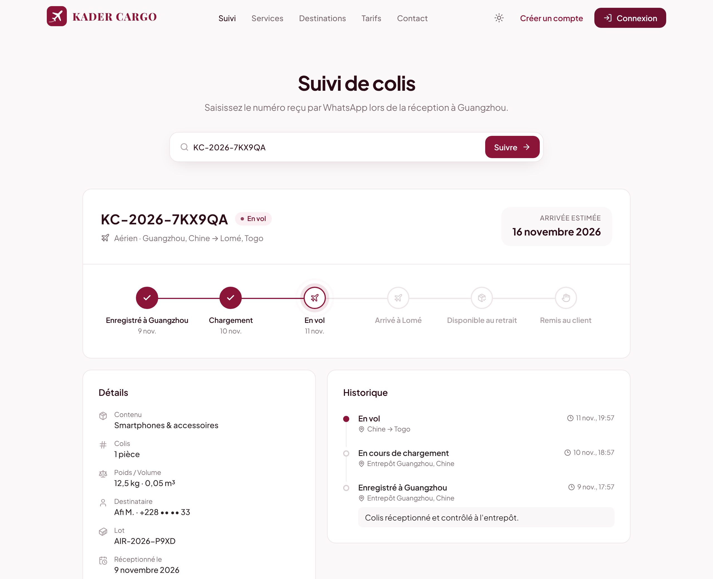
Suivi public : le nom et le numéro du destinataire sont masqués pour protéger sa vie privée.
2.2Créer un compte
Le compte permet de retrouver tous ses colis, ses factures et les photos de contrôle. Il se crée avec un numéro WhatsApp ou une adresse e-mail (Gmail ou autre).
Cliquez sur Créer un compte (en haut du site), indiquez votre nom et votre numéro WhatsApp ou votre e-mail. Le mot de passe est facultatif.
Cliquez sur Recevoir mon code de vérification : un code à 6 chiffres arrive par WhatsApp (ou par e-mail).
Saisissez le code puis Vérifier et créer mon compte.
Le compte est en attente de validation par Kader Cargo. Vous êtes prévenu par WhatsApp ou e-mail dès qu’il est activé.
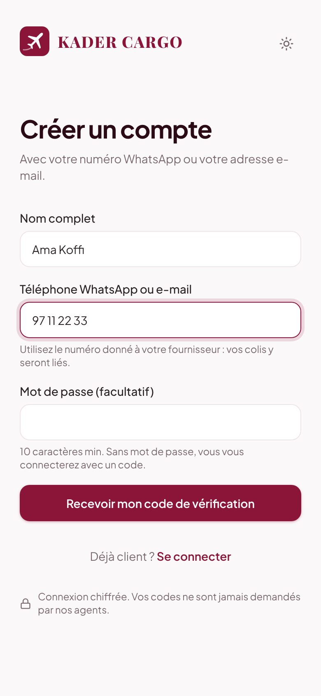
1 · Formulaire2 · Code reçu3 · En attente de validation
Conseil
Utilisez le même numéro que celui donné à votre fournisseur : les colis enregistrés à ce numéro apparaîtront automatiquement dans votre espace.
2.3Se connecter
Trois façons de se connecter, toutes liées au même compte :
Code WhatsApp / e-mail (recommandé) : saisissez votre numéro ou votre e-mail, cliquez sur Recevoir un code, puis saisissez le code reçu.
Mot de passe : onglet « Mot de passe », si vous en avez créé un.
Continuer avec Google : avec votre compte Gmail (si Kader Cargo a activé cette option).
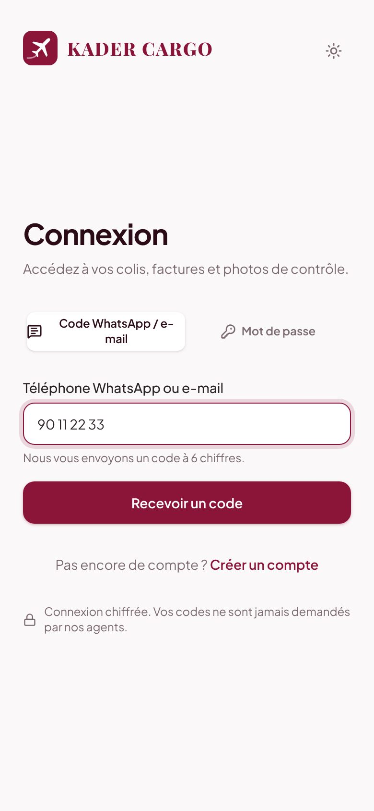
Connexion par code
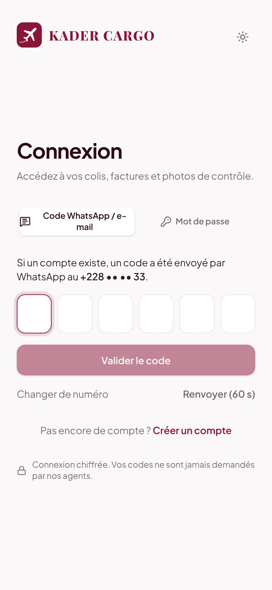
Saisie du code reçu
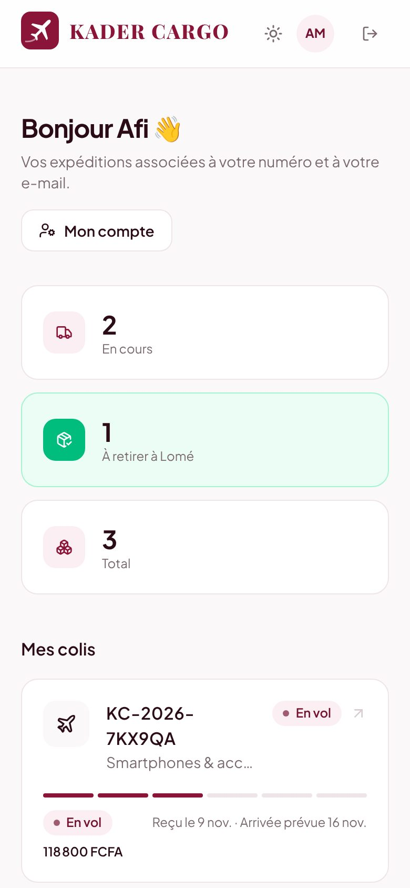
Espace client
Sécurité
Un code est valable 10 minutes. Ne le communiquez jamais à personne, même à un agent Kader Cargo : nos équipes ne vous le demanderont jamais.
2.4Mes colis, factures et photos
L’espace client liste tous les colis enregistrés à votre numéro ou à votre e-mail, avec leur progression. Cliquez sur un colis pour voir :
la frise des 6 étapes et l’historique daté ;
le récapitulatif (montant, poids, volume, lot, arrivée estimée) ;
les photos de contrôle prises à la réception à Guangzhou (cliquez pour agrandir) ;
le bouton Facture PDF pour télécharger la facture.
Détail d’un colis dans l’espace client.
2.5Mon compte : moyens de connexion
Depuis Mon compte, le client gère tous ses moyens de connexion :
Téléphone WhatsApp : ajouter ou changer de numéro (vérifié par un code) ;
Adresse e-mail : ajouter ou changer (vérifiée par un code) ;
Compte Google : lier ou dissocier ;
Mot de passe : créer ou modifier.
Ajouter un numéro donne aussi accès aux colis enregistrés à ce numéro — c’est pourquoi chaque ajout est vérifié par un code.
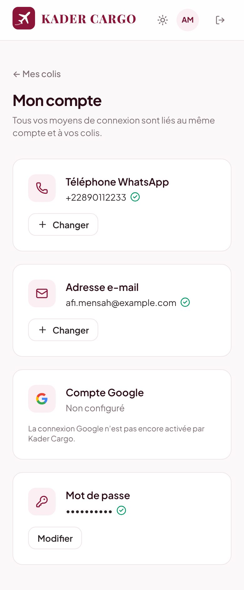
Partie 3
Guide de l’équipe Kader Cargo
Back-office : administration, entrepôt de Guangzhou, agence de Lomé, notifications et alertes WhatsApp.
3.1Accéder au back-office
Allez sur la page Connexion, onglet Mot de passe, avec l’e-mail et le mot de passe de votre compte personnel. Vous arrivez sur la Vue d’ensemble : colis en cours, colis à retirer, lots ouverts, chiffre d’affaires, répartition par étape et activité récente. Le menu de gauche donne accès aux Colis, aux Conteneurs et, pour l’administrateur, aux Utilisateurs.
Vue d’ensemble. La cloche, en haut du menu, affiche un chiffre rouge dès qu’une notification arrive.
3.2Notifications sonores
La cloche en haut du menu prévient l’équipe en temps réel (vérification toutes les 10 secondes) :
nouveau compte client à valider Admin
conteneur / vol parti de Guangzhou
bateau ou vol arrivé à Lomé
colis arrivé à Lomé
alerte WhatsApp non délivrée Admin
À chaque nouvel événement : un son, une fenêtre à l’écran et le nombre dans le titre de l’onglet, par exemple « (2) Kader Cargo ». Cliquez sur une notification pour ouvrir la page concernée.
Panneau des notifications.
Activer le son
Par sécurité, les navigateurs n’autorisent le son qu’après un premier clic sur la page. Gardez le back-office ouvert dans un onglet et cliquez une fois dessus en début de journée. Le son se coupe ou se réactive dans le panneau (« Son activé »). Le lien « Recevoir aussi les notifications du navigateur » affiche des alertes même quand l’onglet est en arrière-plan.
3.3Administrateur : valider les comptes clients
Quand un client s’inscrit, la cloche sonne : « Nouveau compte client à valider ».
Ouvrez Utilisateurs → À valider. Chaque demande indique le nom, le numéro ou l’e-mail vérifié (coche verte) et le mode d’inscription.
Cliquez sur Valider : le compte devient actif et le client est prévenu par WhatsApp ou e-mail. Ou Refuser, avec un motif facultatif transmis au client.
Comptes en attente de validation.
Créer un compte pour le personnel ou un client
Bouton Nouveau compte : nom, rôle (Client, Entrepôt Guangzhou, Agence Lomé, Administrateur), e-mail et/ou téléphone, mot de passe initial (10 caractères minimum). Les comptes créés par l’agence sont actifs immédiatement. Le bouton Désactiver coupe l’accès d’un compte (départ d’un employé, par exemple) et ferme ses sessions.
3.4Entrepôt Guangzhou : réceptionner un colis
Cliquez sur Nouvelle réception et choisissez Aérien ou Maritime.
Renseignez le contenu, le nombre de colis, le poids (kg) et le volume (m³), puis le nom et le numéro WhatsApp du destinataire à Lomé.
Ajoutez les photos de contrôle (JPEG, PNG ou WebP, jusqu’à 8 photos de 5 Mo).
Vérifiez le montant estimé et cliquez sur Enregistrer & notifier.
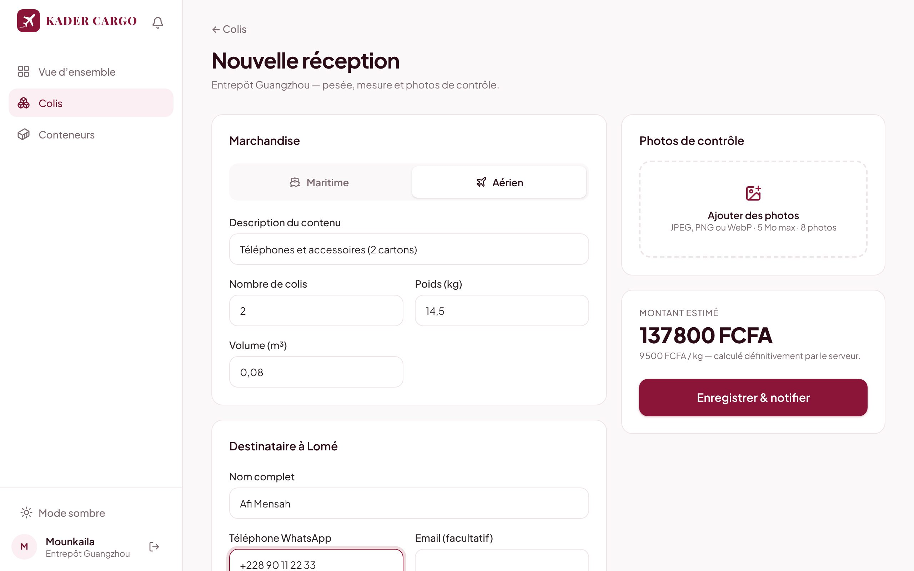
Formulaire de réception. Le montant définitif est calculé par le serveur.
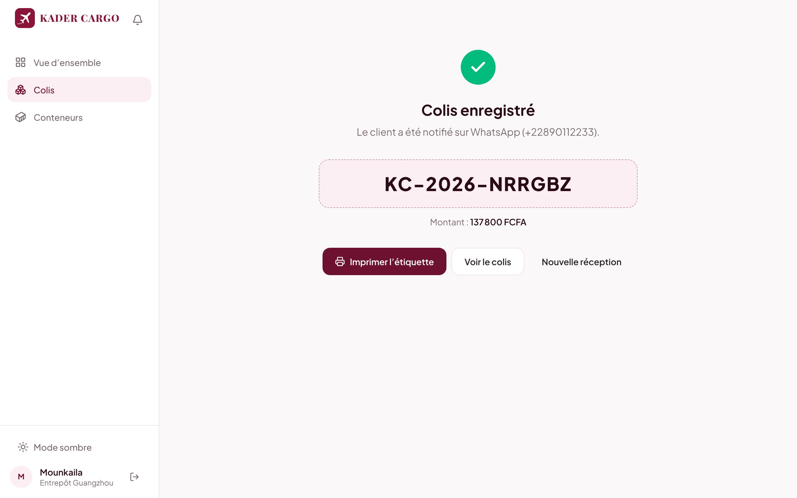
Le numéro de suivi est créé et le client prévenu sur WhatsApp.
L’écran de confirmation affiche le numéro de suivi. Cliquez sur Imprimer l’étiquette pour obtenir l’étiquette 10 × 15 cm (code-barres et QR code) à coller sur le colis.
Étiquette générée.
Le numéro WhatsApp est essentiel
C’est lui qui reçoit toutes les alertes et qui relie le colis à l’espace client. Vérifiez-le avec le client ou le fournisseur. Les numéros togolais à 8 chiffres sont complétés automatiquement en +228.
3.5Entrepôt Guangzhou : lots et conteneurs
Un lot regroupe les colis qui partent ensemble (un vol ou un conteneur maritime). Il permet de faire avancer tous ses colis en une seule fois.
Conteneurs → Nouveau lot : choisissez Aérien ou Maritime et la date d’arrivée estimée, puis Créer le lot.
Dans le lot, zone Ajouter des colis : scannez l’étiquette avec une douchette ou collez plusieurs numéros, puis Ajouter au lot. Les colis déjà expédiés ou d’un autre mode sont refusés avec la raison.
Quand le lot est prêt : Clôturer le lot. Tous ses colis passent à « Chargement » et chaque client est prévenu.
Au départ du vol ou du bateau : dans Mise à jour en masse, choisissez En vol (ou En mer), ajoutez une note si besoin (n° de vol…) et cliquez sur Appliquer à tout le lot.
Lot ouvert : liste des colis, poids, volume et taux de remplissage, ajout par scan.
3.6Agence Lomé : arrivée, dédouanement et remise
Arrivée : ouvrez le lot (Conteneurs) puis, dans Mise à jour en masse, choisissez Arrivé à Lomé et Appliquer à tout le lot. L’équipe reçoit la notification « vol / bateau arrivé ».
Dédouanement validé : choisissez Disponible au retrait. Le client reçoit le message « Votre colis est prêt » avec le montant à régler, les pièces à présenter et le contact de l’agence.
Remise : quand le client vient chercher son colis, ouvrez le colis (recherche par numéro, nom ou téléphone dans Colis) et validez Remis au client.
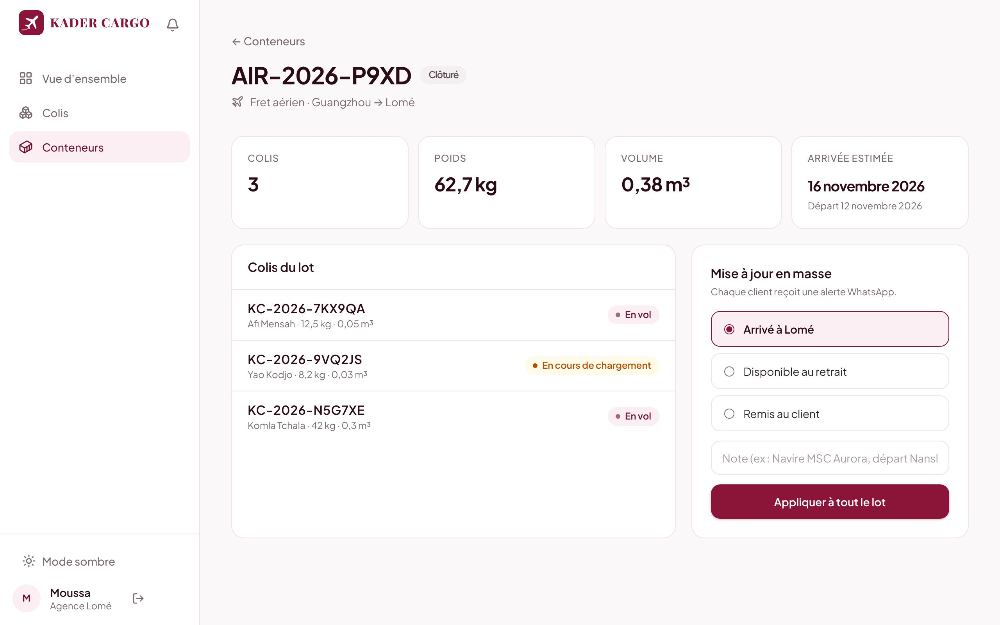
Mise à jour en masse d’un lot.
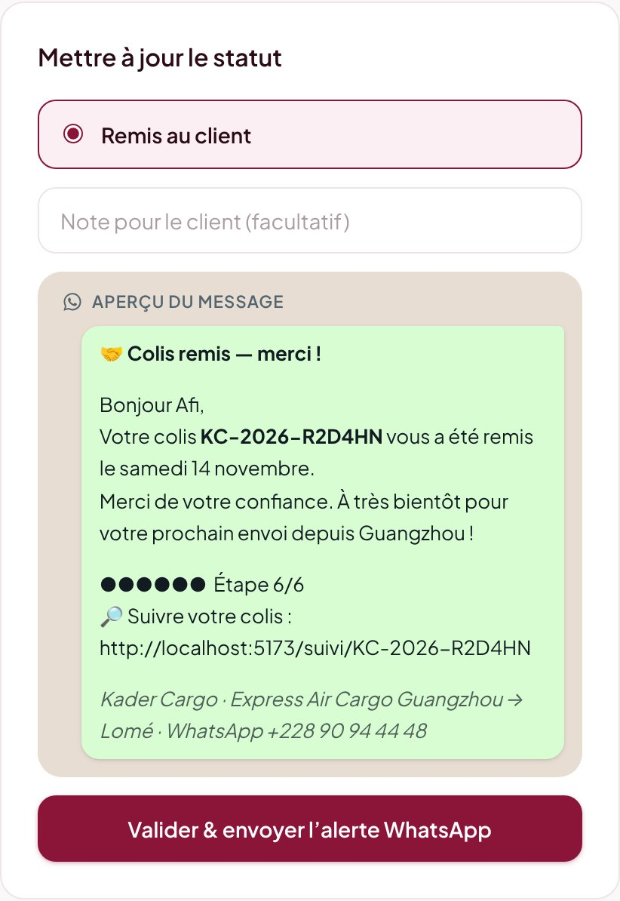
Remise au client, avec l’aperçu du message.
Un statut ne peut qu’avancer
Les agents ne peuvent faire avancer un colis que vers les étapes de leur agence. En cas d’erreur, l’administrateur peut corriger un statut en arrière ; dans ce cas aucun message n’est envoyé au client, pour ne pas l’embrouiller.
3.7Alertes WhatsApp côté équipe
Aperçu : avant de valider une étape, la fiche du colis affiche le message exact que le client va recevoir, y compris votre note.
Une seule alerte par étape : valider deux fois la même étape n’envoie pas de doublon.
Historique : la fiche du colis liste chaque alerte avec son état — EnvoyéEn cours d’envoiÉchecSimulé.
Renvoyer : en cas d’échec (numéro erroné, téléphone éteint…), corrigez si besoin puis cliquez sur Renvoyer. Après 3 tentatives sans succès, l’administrateur est notifié.
Simulé signifie qu’aucun compte WhatsApp n’est encore configuré : le message n’est pas réellement parti (voir partie 4.4).
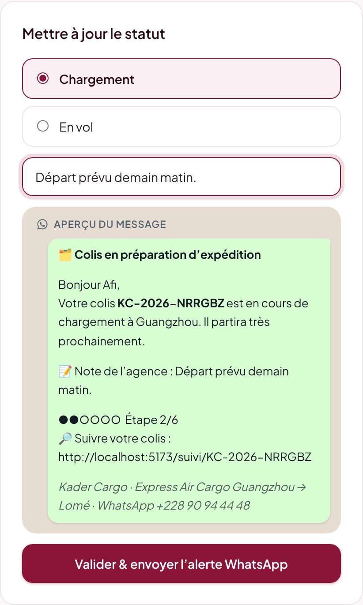
Aperçu du message avant validation.
3.8Factures et bonnes pratiques
La facture PDF (bouton « Facture PDF » sur chaque colis) reprend le client, l’expédition, le détail du calcul et le total. Le client la télécharge aussi depuis son espace.
Photographiez systématiquement les colis à la réception : c’est votre preuve en cas de litige.
Ajoutez une note utile lors des étapes clés (n° de vol, retard, horaires de retrait).
Gardez un onglet du back-office ouvert à Lomé pour entendre les arrivées.
Désactivez immédiatement le compte d’un employé qui quitte l’entreprise.
Facture générée automatiquement.
Partie 4
Déploiement sur un serveur
Pour le technicien : installation, configuration WhatsApp / e-mail / Google, mises à jour, sauvegardes et dépannage.
Procédure testée
Les commandes de cette partie ont été exécutées sur Ubuntu 24.04 : installation, HTTPS, création de l’administrateur, enregistrement d’un colis avec photo, PDF, mise à jour, sauvegarde et restauration. Les fichiers de configuration cités se trouvent dans le dossier deploy/ du projet. Dans les exemples, remplacez kadercargo.com par votre nom de domaine.
4.1Ce qu’il faut
Élément
Détail
Un serveur (VPS)
Ubuntu 24.04 LTS, 2 vCPU, 2 à 4 Go de RAM, 40 Go de disque SSD, accès root en SSH (OVHcloud, Hetzner, DigitalOcean, Contabo… quelques euros par mois suffisent pour démarrer).
Un nom de domaine
Par exemple kadercargo.com, avec accès à sa zone DNS.
Accès au code
Le dépôt GitHub siaoctawacta/Tracking (privé) : une « clé de déploiement » sera ajoutée à l’étape 5.
WhatsApp
Un compte Twilio ou WhatsApp Business (Meta) avec un numéro dédié — indispensable pour les codes de connexion et les alertes.
E-mail
Une adresse Gmail avec la validation en deux étapes (pour les codes envoyés par e-mail).
Google (facultatif)
Un projet Google Cloud pour le bouton « Continuer avec Google ».
4.2Architecture
Clients & équipeNavigateur ordinateur / mobile
HTTPS →
CaddyHTTPS automatique (Let’s Encrypt), en-têtes de sécurité / → site (fichiers) /api → API
→
API Node.jsservice systemd, port 4000 local
Données/var/lib/kader-cargo base SQLite + photos
Tout tient sur un seul serveur. L’API n’est jamais exposée directement : seul Caddy écoute sur Internet (ports 80 et 443). La base de données est un fichier SQLite, largement suffisant pour plusieurs milliers de colis par mois, sauvegardé chaque nuit.
4.3Installation pas à pas
Étape 1 — Pointer le domaine vers le serveur
Dans la zone DNS du domaine, créez deux enregistrements A : kadercargo.com et www.kadercargo.com vers l’adresse IP du serveur. Attendez qu’ils soient actifs (quelques minutes à quelques heures).
$ cd /srv/kader-cargo
$ cp deploy/env.production.example api/.env
# Générer le secret des sessions, puis le coller dans JWT_SECRET$ node -e "console.log(require('crypto').randomBytes(48).toString('base64url'))"
$ nano api/.env # JWT_SECRET, PUBLIC_WEB_URL, WhatsApp, e-mail (voir 4.4)# Seuls root et l’utilisateur kader peuvent lire ce fichier$ chown root:kader api/.env && chmod 640 api/.env
Étape 7 — Installer, construire, créer la base et l’administrateur
$ npm --prefix api ci
$ npm --prefix web ci
$ npm --prefix web run build
$ cd /srv/kader-cargo/api
$ runuser -u kader -- ./node_modules/.bin/prisma migrate deploy
$ runuser -u kader -- npm run create-admin -- --name "Kader" --email admin@kadercargo.com
Mot de passe (10 caractères min.) : ← saisi sans affichage
Administrateur créé : Kader (admin@kadercargo.com)
Ne jamais lancer « npm run setup » ni « db:seed » en production
Ces commandes installent les données de démonstration et effacent toutes les données existantes. Sur le serveur, utilisez uniquement prisma migrate deploy et create-admin.
Caddy obtient et renouvelle automatiquement le certificat HTTPS. Ouvrez https://kadercargo.com et connectez-vous avec le compte administrateur, onglet « Mot de passe ».
Étape 10 — Sauvegardes automatiques
$ cp /srv/kader-cargo/deploy/cron.kader-cargo /etc/cron.d/kader-cargo
$ /srv/kader-cargo/deploy/backup.sh # premier essai manuel
Une sauvegarde de la base et des photos est faite chaque nuit à 2 h 30 dans /var/backups/kader-cargo (conservation 14 jours).
4.4WhatsApp, e-mail et Google
Ces réglages se font dans /srv/kader-cargo/api/.env, suivis de systemctl restart kader-cargo-api. Sans WhatsApp ni e-mail configurés, aucun code ni alerte ne part réellement (état « Simulé ») : configurez-les avant d’ouvrir les inscriptions.
WhatsApp — option A : Meta (WhatsApp Business Cloud API)
Dans Meta Business Suite → WhatsApp Manager, ajoutez un numéro dédié (qui n’est pas déjà utilisé dans l’application WhatsApp).
Créez les modèles de messages en français : kader_registered, kader_loading, kader_in_transit, kader_arrived, kader_ready, kader_delivered (catégorie Utility), kader_account (Utility) et kader_otp (catégorie Authentification). Les textes à soumettre sont dans docs/whatsapp-alertes.md.
Créez un utilisateur système avec un jeton permanent, puis renseignez META_WHATSAPP_TOKEN et META_WHATSAPP_PHONE_NUMBER_ID.
WhatsApp — option B : Twilio
Renseignez TWILIO_ACCOUNT_SID, TWILIO_AUTH_TOKEN et TWILIO_WHATSAPP_FROM (numéro WhatsApp activé chez Twilio). Déclarez les mêmes modèles dans Twilio Content et listez leurs identifiants dans TWILIO_CONTENT_SIDS.
E-mail avec Gmail
Sur le compte Google de l’adresse d’envoi, activez la validation en deux étapes.
Créez un mot de passe d’application (Compte Google → Sécurité → Mots de passe des applications), nommé « Kader Cargo ».
Dans .env : SMTP_USER = l’adresse Gmail, SMTP_PASS = le mot de passe d’application (16 caractères), MAIL_FROM = « Kader Cargo <adresse@gmail.com> ».
Gmail limite le nombre d’envois par jour ; si le volume grandit, passez à un service d’envoi dédié (mêmes réglages SMTP).
Bouton « Continuer avec Google » (facultatif)
console.cloud.google.com → créez un projet, configurez l’écran de consentement OAuth (nom « Kader Cargo », logo, e-mail d’assistance).
Identifiants → Créer un ID client OAuth, type « Application Web », origine JavaScript autorisée : https://kadercargo.com.
Copiez l’ID client dans GOOGLE_CLIENT_ID et redémarrez l’API : le bouton apparaît automatiquement.
4.5Mettre à jour l’application
Quand une nouvelle version est publiée sur la branche main :
$ /srv/kader-cargo/deploy/update.sh
Le script fait une sauvegarde, récupère le code, installe les dépendances, applique les migrations de base de données (sans perte de données), reconstruit le site, redémarre l’API puis vérifie qu’elle répond : « ✓ Kader Cargo est à jour et en ligne ».
4.6Sauvegardes et restauration
Chaque nuit, backup.sh crée dans /var/backups/kader-cargo une copie cohérente de la base (kader-DATE.db, faite sans arrêter le service) et une archive des photos (photos-DATE.tar.gz).
Copie hors du serveur
Une sauvegarde qui reste sur le serveur ne protège pas contre la perte du serveur. Copiez régulièrement ce dossier ailleurs (stockage cloud, autre serveur), par exemple avec rclone ou scp, et activez si possible les sauvegardes automatiques de votre hébergeur.
Les données reviennent à l’état du moment de la sauvegarde choisie : ce qui a été saisi après est perdu.
4.7Surveillance et dépannage
$ systemctl status kader-cargo-api # état de l’API$ journalctl -u kader-cargo-api -f # journal en direct (codes, alertes, erreurs)$ journalctl -u caddy -n 50 # journal HTTPS$ curl https://kadercargo.com/api/v1/health
Pour être alerté si le site tombe, surveillez l’adresse https://kadercargo.com/api/v1/health avec un service gratuit de surveillance (UptimeRobot, Better Stack…).
Problème
Que vérifier
Le site ne s’ouvre pas
DNS (étape 1), pare-feu (ufw status), systemctl status caddy.
« 502 Bad Gateway »
L’API est arrêtée : journalctl -u kader-cargo-api -n 50, puis systemctl restart kader-cargo-api.
L’API refuse de démarrer : « JWT_SECRET must be set »
JWT_SECRET manquant ou trop court dans api/.env (étape 6).
Les clients ne reçoivent pas les codes WhatsApp
Alertes « Simulé » : WhatsApp non configuré. « Échec » : identifiants, modèles non approuvés ou numéro invalide — le message d’erreur est dans la fiche du colis et dans le journal.
Les e-mails n’arrivent pas
Mot de passe d’application Gmail, dossier spam du destinataire, journal de l’API.
Le bouton Google n’apparaît pas
GOOGLE_CLIENT_ID vide, ou domaine absent des origines autorisées dans Google Cloud.
« Trop de tentatives »
Protection contre les attaques : 5 essais de mot de passe par 15 minutes. Patienter ou se connecter par code.
Pas de son dans le back-office
Cliquer une fois dans la page ; vérifier « Son activé » dans la cloche et le volume de l’ordinateur.
4.8Check-list de mise en production
JWT_SECRET long et unique, api/.env en droits 640 ; ne jamais le publier ni l’envoyer par message.
Connexion SSH par clé uniquement (désactiver le mot de passe root) et mises à jour de sécurité automatiques (unattended-upgrades).
Pare-feu actif : seuls SSH, 80 et 443 sont ouverts.
WhatsApp et e-mail configurés et testés avant d’annoncer l’inscription aux clients.
PUBLIC_WEB_URL renseigné (liens de suivi dans les messages).
Sauvegarde nocturne active et copiée hors du serveur ; une restauration testée.
Un compte nominatif par employé, avec le bon rôle ; comptes désactivés au départ d’un employé.
Contenus vérifiés sur le site : tarifs, délais, offre maritime, adresse de l’agence de Lomé (voir annexe).
Annexes
Référence
Variables de configuration, informations à compléter et contacts.
AVariables du fichier api/.env
Variable
Rôle
NODE_ENV
production : cookies sécurisés, aucun code de démonstration affiché.
JWT_SECRET
Secret de signature des sessions (obligatoire, généré une fois).
DATABASE_URL · UPLOAD_DIR
Emplacement de la base et des photos (/var/lib/kader-cargo).
PUBLIC_WEB_URL
Adresse du site, utilisée dans les liens WhatsApp et e-mails.
TRUST_PROXY
1 derrière Caddy (limitation correcte par adresse IP).
LOGIN_RATE_LIMIT
Essais de mot de passe autorisés par IP et par 15 minutes (5).
TWILIO_* · META_* · WHATSAPP_PROVIDER
Envoi WhatsApp (codes et alertes). Voir 4.4.
SMTP_* · MAIL_FROM
Envoi d’e-mails (codes de vérification, avis de compte).
GOOGLE_CLIENT_ID
Active le bouton « Continuer avec Google ».
BInformations à confirmer par Kader Cargo
Élément
Valeur actuelle
Tarif aérien
9 500 FCFA / kg (minimum 10 000 FCFA) — à confirmer
Aérien 7 à 10 jours, maritime 45 à 60 jours — à confirmer
Adresse de l’agence de Lomé
À fournir (le site affiche « Lomé, Togo »)
Ces valeurs se modifient dans le code (api/src/lib/domain.ts pour les tarifs facturés, web/src/lib/site.ts pour les coordonnées affichées), puis on publie une mise à jour (4.5).